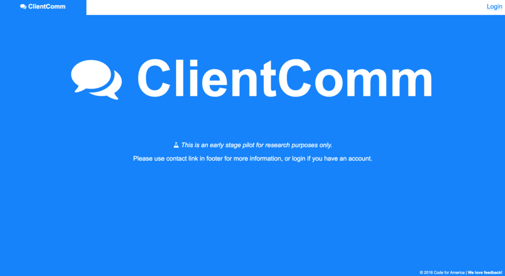

Inital Protytype
This version effectively provided two functions: It could send and it could receive text messages. That was it. When onboarding a case manager, we explained that those were the two functions we guaranteed would work. Everything else was either absent or partially developed and obscured from the user. This ultra-streamlined project was the simplest wrapper over the underlying database structure that allowed messages to a single number (attributed to the organization), to be routed to the correct case manager account.
 Original application landing screen.Learning
Through in-depth user interviews with clients and case managers, the following was observed: Patterns of behavior towards supervision, differences in individual attitudes, and barriers to complying with supervision. Synthesis of the results of this user research formed the foundation for the way we understood the problem, and what needed to be built in order to best serve those working to address it (the case managers).
We learned that while some people are indeed simply forgetting their appointments, there are a myriad of social, emotional, financial, logistical, and institutional barriers that account for people failing to comply with their supervision.
To better accomplish the goals of our project, we reshaped our development strategy to focus on two-way communication that allows case managers to organize and maintain a list of all client contact methods and devices and give clients easier access to information about their supervision that their case manager maintains.
Building
Only the most basic features were built out in this version of the application. We had accounts that were for case managers, which allowed them to add clients and attach contact methods to each client. With that information, they were able to send and receive text messages. That was it, though. There were no "frills" to be had, particularly in terms of the user experience and graphical layout of the tool. Indeed, this was very much an "engineering first" product. Our MVP worked, and that was it. What we ultimately tested at first was whether or not it functionally matched and meshed with the workflow of the Criminal Justice Services' case workers.
Navigation through the application was extremely rudimentary. Little to no style was present on the rendered HTML, leaving only the most basic inputs and actions visible and present.Measuring
Application use was simply observed by page count and number of unique visitors, as well as average duration. Google Analytics provides a more than sufficient free tool to qualify whether or not people are staying and in fact using the application. Evaluating use was simply a measure of making sure that individuals were coming and staying at the site. This, combined with the sent message count and in-depth interviews with case managers formed the foundation of the tool'e evaluation.
 Screen capture of the default admin dashboard provided through Google Analytics.
Screen capture of the default admin dashboard provided through Google Analytics.
Overview / Version 2.0